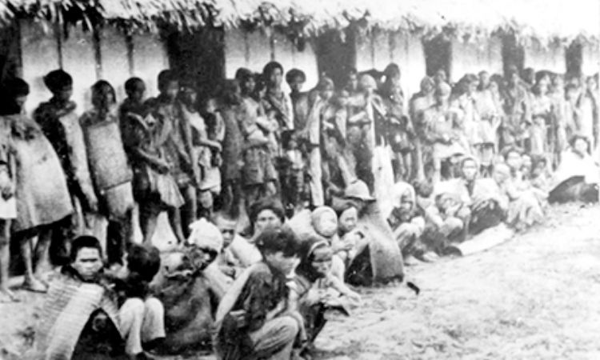

LỊCH SỬ NGÀY ĐỘC LẬP VĨ ĐẠI - 2/9/1945
-Hành trình từ đêm tối nô lệ đến ánh sáng tự do của dân tộc Việt Nam-
1. Bối Cảnh Trước Cách Mạng Tháng Tám
Sau hơn 80 năm chịu ách đô hộ của thực dân Pháp và sự chiếm đóng của phát xít Nhật trong những năm Chiến tranh Thế giới thứ II, nhân dân Việt Nam sống trong cảnh lầm than, đói nghèo cùng cực. Dưới sự lãnh đạo của Đảng Cộng sản Đông Dương và Chủ tịch Hồ Chí Minh, phong trào đấu tranh giành độc lập không ngừng được nhen nhóm.
Tháng 8 năm 1945, khi phát xít Nhật đầu hàng Đồng minh, tạo ra một khoảng trống quyền lực lớn. Đây chính là "thời cơ ngàn năm có một" để nhân dân ta đứng lên Tổng khởi nghĩa (Cách mạng Tháng Tám) và giành lại chính quyền trong vòng chưa đầy hai tuần.
2. Ngày 2/9 Lịch Sử tại Quảng Trường Ba Đình

Chủ tịch Hồ Chí Minh đọc Tuyên ngôn Độc lập tại Quảng trường Ba Đình, Hà Nội.
Sáng ngày mùng 2/9/1945, hàng chục vạn người hàng ngũ chỉnh tề, cờ hoa khoe sắc, áo quần tươi màu đỏ thắm đã dồn về quảng trường Ba Đình, Hà Nội. Những biểu ngữ nền đỏ chữ vàng bằng các thứ tiếng Việt, Anh, Pháp, Hoa, Nga chăng ngang đường phố: “Nước Việt Nam là của người Việt Nam”, “Độc lập hay là chết”, “Ủng hộ Chủ tịch Hồ Chí Minh”. Đúng 14 giờ, Chủ tịch Hồ Chí Minh và các thành viên trong Chính phủ lâm thời đã tiến ra lễ đài, bản nhạc Tiến quân ca hùng tráng vang lên, mọi ánh mắt đều hướng về lá cờ đỏ sao vàng đang từ từ kéo lên. Hàng chục vạn bàn tay nắm chặt giơ cao, biểu thị lòng quyết tâm và ý chí sắt đá, kính chào lá cờ vinh quang của Tổ quốc. Chủ tịch Hồ Chí Minh thay mặt Chính phủ lâm thời đã trang trọng đọc bản Tuyên ngôn độc lập, tuyên bố với quốc dân đồng bào cả nước và toàn thể nhân loại trên thế giới, bắt đầu từ nay Nước Việt Nam Dân chủ Cộng hòa đã ra đời.
Trước quốc dân đồng bào, Chủ tịch Hồ Chí Minh, thay mặt Chính phủ Lâm thời Nước Việt Nam Dân chủ Cộng hòa, đã long trọng đọc bản Tuyên ngôn Độc lập.
Lời Người vang vọng, khẳng định quyền độc lập, tự do của dân tộc, mở đầu bằng chân lý bất hủ: “Tất cả mọi người sinh ra đều có quyền bình đẳng. Tạo hóa cho họ những quyền không ai có thể xâm phạm được; trong những quyền ấy, có quyền được sống, quyền tự do và quyền mưu cầu hạnh phúc.”
Cuối bài Tuyên ngôn, Chủ tịch Hồ Chí Minh hỏi: "Đồng bào có nghe rõ không?"*Lời đáp "Có!" vang dội của nhân dân là lời thề sắt đá của cả một dân tộc trước vận mệnh mới, chính thức khai sinh ra nước Việt Nam hiện đại.
3. Ý Nghĩa Vĩ Đại Của Ngày Quốc Khánh
Ý nghĩa đối với Dân Tộc
- Chấm dứt hoàn toàn chế độ phong kiến và ách thống trị thực dân trên đất nước Việt Nam.
- Mở ra một kỷ nguyên mới: kỷ nguyên **Độc lập, Tự do, Hạnh phúc** cho toàn dân tộc.
- Khẳng định ý chí tự chủ, tự cường và sự đoàn kết vững mạnh của nhân dân Việt Nam.
Ý nghĩa đối với Quốc Tế
- Là ngọn cờ cổ vũ mạnh mẽ phong trào giải phóng dân tộc trên khắp thế giới, đặc biệt là tại các quốc gia thuộc địa ở châu Á và châu Phi.
- Là một đóng góp to lớn vào công cuộc đấu tranh vì hòa bình, dân chủ và tiến bộ xã hội của nhân loại.